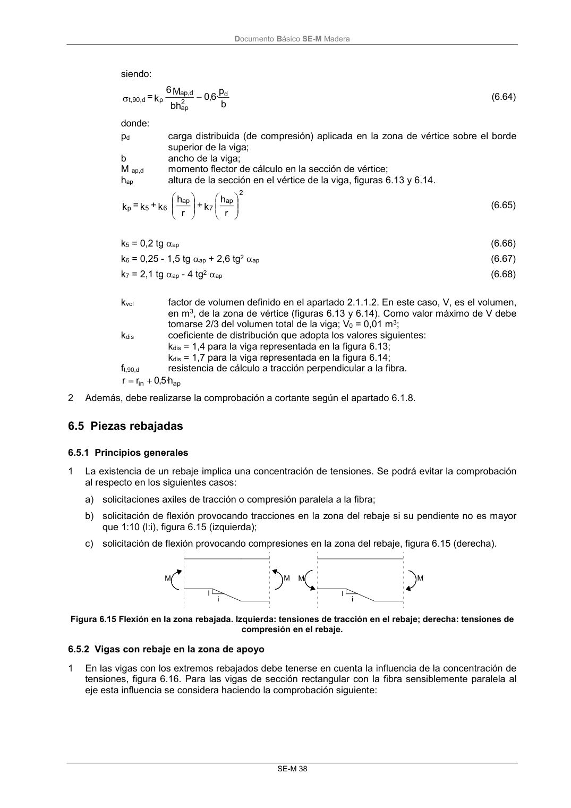

DB-SE-M · Fragmento de PDF p44 · versión 2019-12-20 · capa oficial
Formatos: JSON compacto · Markdown · PDF fuente
Ámbito del documento · texto del ámbito · documento y tablas
ID técnico a0091 · PDF pág. 44 · jerarquía no validada por persona · no es capítulo: sin_linea_de_encabezado · padre: raíz · literal original en el contenido: «6.5 Piezas rebajadas 6.5.1 Principios generales»
6.5 Piezas rebajadas 6.5.1 Principios generales 6.5.1 Principios generales 1 La existencia de un rebaje implica una concentración de tensiones. Se podrá evitar la comprobación al respecto en los siguientes casos: a) solicitaciones axiles de tracción o compresión paralela a la fibra; b) solicitación de flexión provocando tracciones en la zona del rebaje si su pendiente no es mayor que 1:10 (l:i), figura 6.15 (izquierda); c) solicitación de flexión provocando compresiones en la zona del rebaje, figura 6.15 (derecha). Figura 6.15 Flexión en la zona rebajada. Izquierda: tensiones de tracción en el rebaje; derecha: tensiones de compresión en el rebaje.

PDF fuente redistribuible: copia fiel enlazada en esta página (SHA256 verificado).